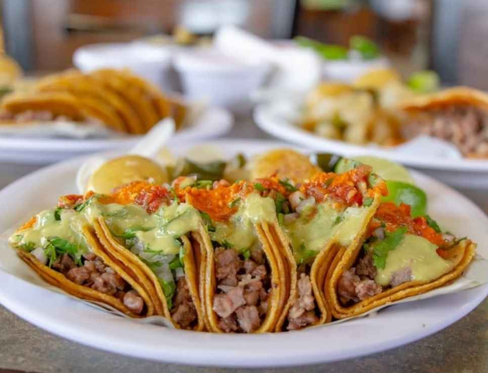
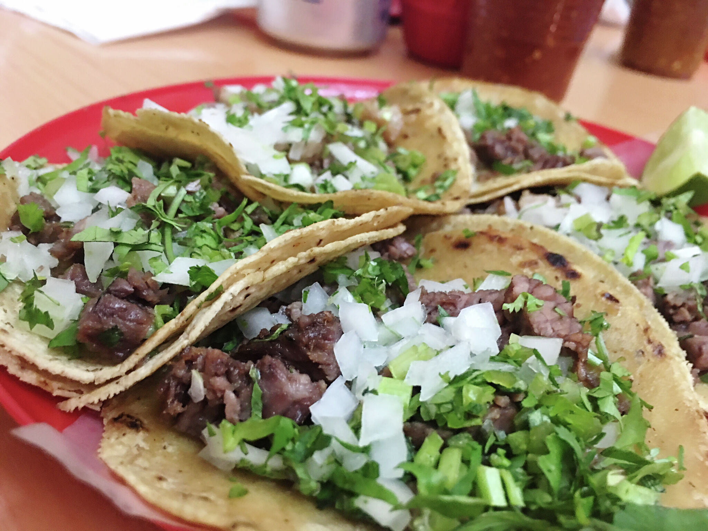

El sabor que sí deja huella”
En Taquería El Chirris nos dedicamos a preparar tacos con verdadero sabor mexicano, usando ingredientes frescos, carne bien preparada y tortillas calientitas hechas para acompañar cada antojo 😮💨🌮
Especialidades
Tacos al pastor
Bistec
Suadero
Chorizo
Campechanos
Gringas
Quesadillas
Tortas
Volcanes

¿Por qué elegir El Chirris?
✔️ Carne bien servida
✔️ Salsas con sabor de verdad
✔️ Atención chingona
✔️ Calidad en cada orden
✔️ Sabor único que no encuentras en otro lado
🥤 Ambiente
Perfecto para venir con amigos, familia o quitarte ese antojo de noche con unos buenos tacos y una coca bien fría 😮💨🔥
📍 Taquería El Chirris
“Con hambre llegas… feliz te vas” 🌮🔥

* Facebook
* Instagram
* TikTok
Horario: Lunes a sábado ( 9:00 AM – 7:00 PM)
* WhatsApp: +52 55 1234 5678
@taqueria.chirris
Ubicación: Oaxaca de Juárez